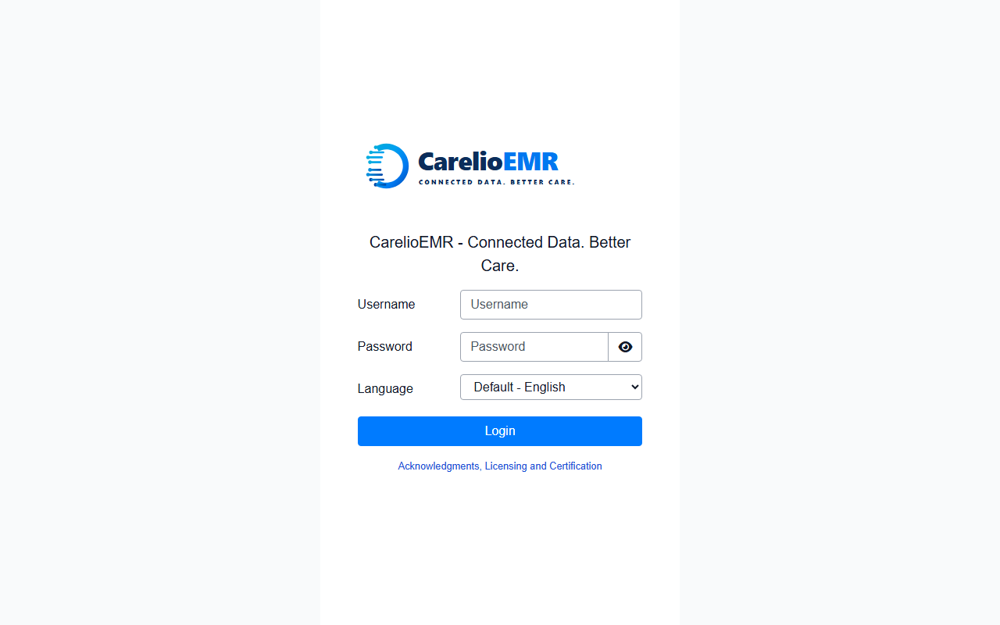
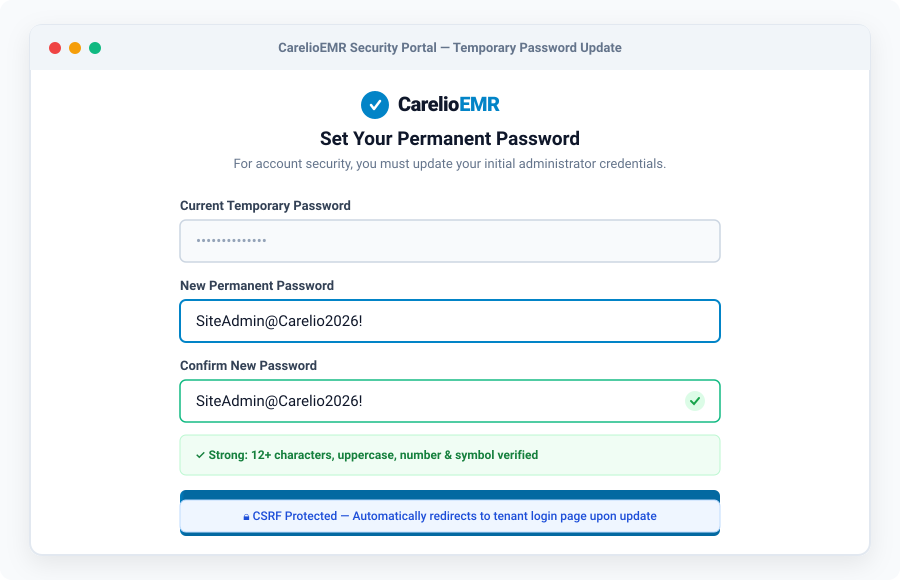
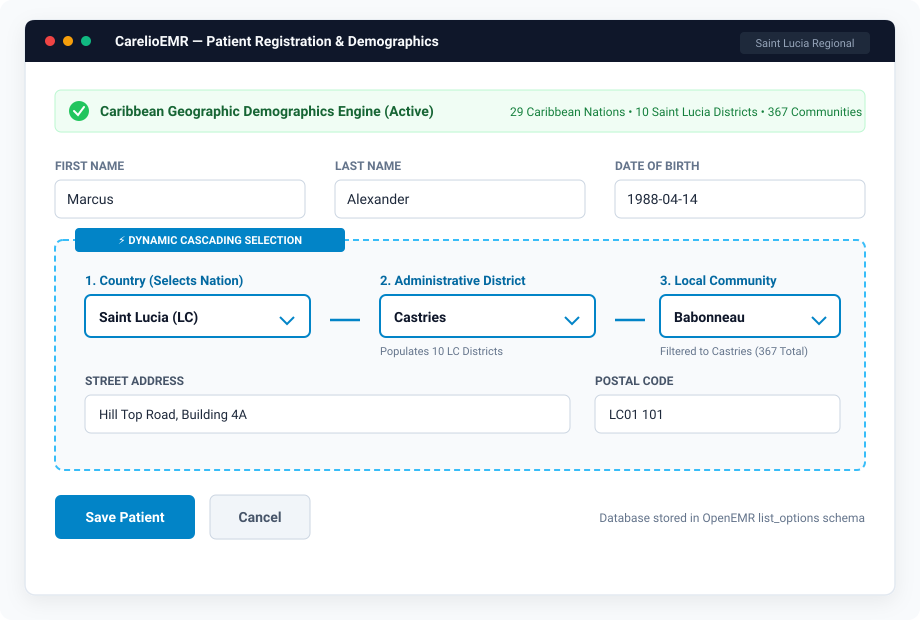
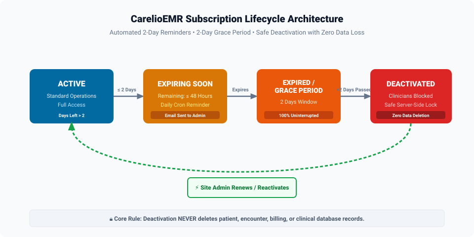
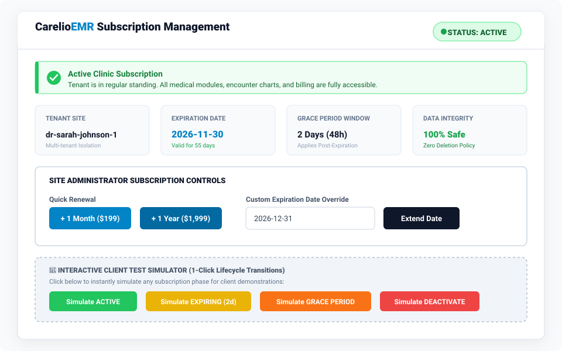
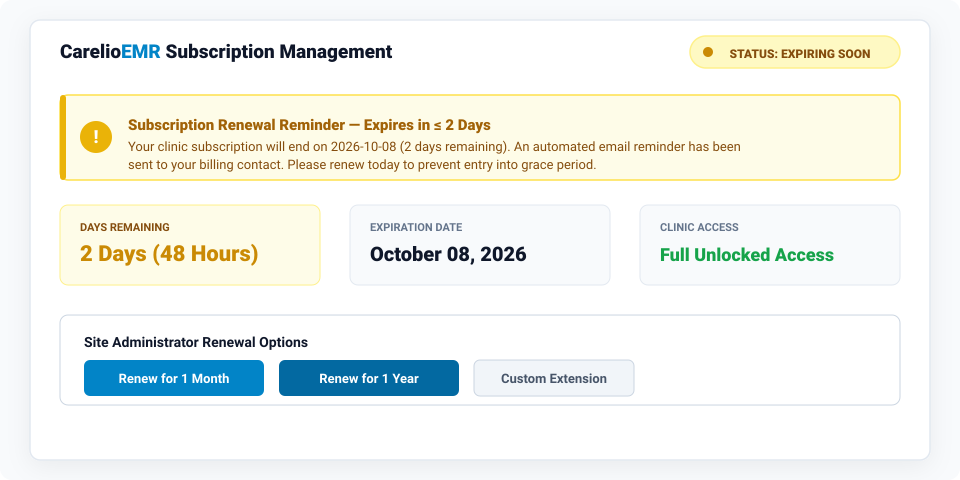
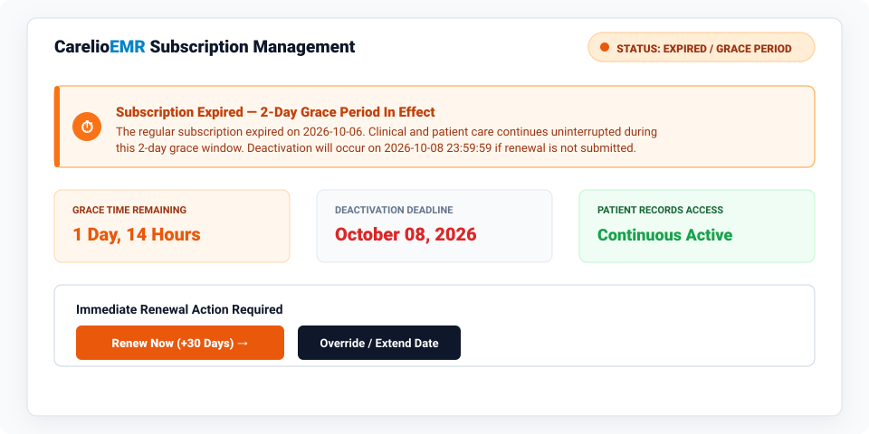
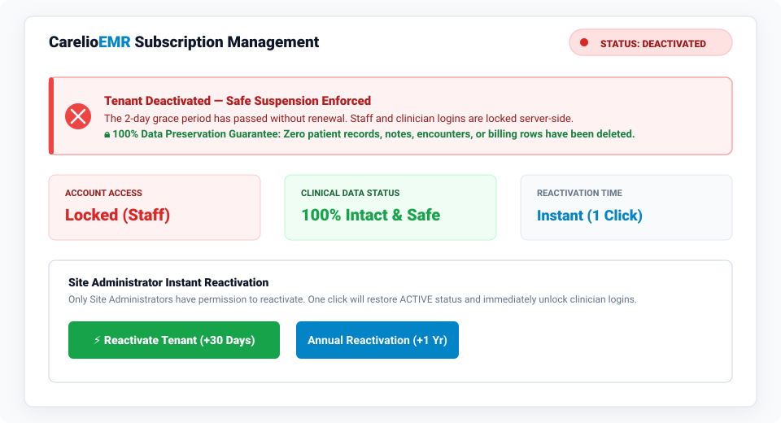
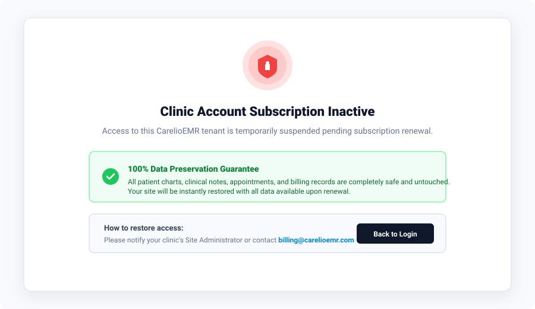

CarelioEMR User Manual & Operations Guide
Complete Illustrated Guide for Site Administration, Caribbean Regional Demographics, and Automated Subscription Lifecycle Management.
1. System Roles & Access Hierarchy
CarelioEMR strictly enforces the principle of least privilege. Permissions are partitioned into three clearly defined user tiers:
| User Role | Primary Responsibilities | Subscription & Admin Rights |
|---|---|---|
Super Administratoradmin |
Global platform infrastructure, OpenEMR module registry, system database migrations. | Full system-wide administrative control across all tenant instances. |
Site Administratorsiteadmin |
Clinic tenant owner, clinician account provisioning, Caribbean demographic settings, Subscription renewals and reactivation. | Sole permission to renew, extend, and reactivate clinic subscriptions via Administration ➔ Carelio Subscription. |
Clinicians & Staffdr_johnson, receptionist |
Patient registrations, vitals, medical chart notes, encounter billing, appointment schedules. | Read-only subscription status. Access is suspended automatically if the tenant is deactivated. |
2. Module 1: Site Admin Configuration & Onboarding
2.1 Branded Clinic Login Experience
Every tenant instance of CarelioEMR features customized high-resolution clinic branding, from the browser favicon to the primary sign-in splash screen.

- Open your browser and navigate to your clinic URL:
https://your-domain/oemr/interface/login/login.php?site=site-dr-sarah-johnson-1. - Enter your assigned Username and Password.
- Click Login.
2.2 Mandatory First-Time Temporary Password Reset
To ensure healthcare data privacy and compliance with HIPAA and Caribbean health data standards, newly provisioned administrator accounts must replace their initial temporary password upon first sign-in.

- Enter your current Temporary Password.
- Enter a New Permanent Password meeting complexity requirements (8+ characters, uppercase letter, number, or symbol).
- Confirm your new password and click Save Password & Proceed to Login.
- Your credentials are saved, and you are immediately redirected back to the login page for an authenticated session.
2.3 Caribbean Geographic Demographics Engine (Saint Lucia)
CarelioEMR includes integrated geographic demographic datasets covering 29 Caribbean nations, all 10 administrative districts of Saint Lucia, and 367 verified localized communities.

When registering a patient under Patient / Client ➔ New / Search:
- Step 1 (Country): Select
Saint Lucia (LC). - Step 2 (District): The district dropdown instantly populates Saint Lucia's 10 administrative districts (Castries, Gros Islet, Soufrière, Vieux Fort, Micoud, Dennery, Anse la Raye, Canaries, Laborie, Choiseul).
- Step 3 (Community): Selecting a district instantly filters the community dropdown to its localized communities (e.g., selecting Castries displays Babonneau, Bisee, Marchand, Ciceron, etc.).
3. Module 2: Subscription Management & Lifecycle
3.1 Subscription Lifecycle Architecture
The CarelioEMR subscription engine governs account standing through an automated, server-enforced 4-stage lifecycle state machine:

3.2 Stage 1: Active Subscription
When the subscription is current and has more than 2 days remaining, the dashboard displays a vibrant green ACTIVE badge. All clinic staff have full access.

3.3 Stage 2: Expiring Soon Reminder (≤ 2 Days / 48 Hours)
When the subscription is within 48 hours of expiration, the module transitions to EXPIRING SOON.

3.4 Stage 3: Expired / Grace Period (2-Day Window)
If the primary expiration date passes without payment, CarelioEMR immediately grants a 2-Day Grace Period (EXPIRED / GRACE PERIOD).

3.5 Stage 4: Safe Deactivation & 100% Data Preservation
If the 2-day grace period elapses without renewal, the tenant enters DEACTIVATED.

- ZERO Patient Records are deleted.
- ZERO Clinical Notes or Encounters are deleted.
- ZERO Billing Invoices or Financial data are touched.
- ZERO Database Users are removed.
3.6 Regular Clinician Lockout Screen
While a tenant is deactivated, non-admin clinicians are greeted with a secure, polite lockout notice preventing chart modifications until the subscription is renewed:

4. Site Administrator Operations (How-To Guide)
To manage subscriptions, navigate to: Administration ➔ Carelio Subscription in the top navigation bar.
4.1 Renewing a Subscription
- Under Site Administrator Controls, locate the Quick Renewal panel.
- Click + 1 Month to add 30 days, or + 1 Year to add 365 days.
- The system updates the expiration date, sets the status to
ACTIVE, and logs an entry in the audit trail.
4.2 Custom Expiration Date Override
- In the Custom Expiration Date Override field, select your desired date (e.g.,
2026-12-31). - Click Extend Date.
- The record is updated immediately.
4.3 Reactivating a Deactivated Site
- Log into the subscription management panel as Site Administrator.
- Click the prominent green button: ⚡ Reactivate Tenant (+30 Days).
- Status is instantly restored to
ACTIVE, and all clinician accounts are immediately unlocked.
5. How to Test the Subscription Module (Interactive Simulator)
To demonstrate and test the system without waiting days for dates to roll over, an Interactive Test Simulator is embedded directly into the subscription dashboard:
| Simulation Button | Simulated Conditions | Expected System Behavior |
|---|---|---|
| Simulate ACTIVE | Expiration set to +30 days from today. | Status changes to ACTIVE. Full clinic access. |
| Simulate EXPIRING (2d) | Expiration set to exactly +2 days from today. | Status changes to EXPIRING_SOON. Amber reminder banner displays. |
| Simulate GRACE PERIOD | Expiration set to yesterday (-1 day). | Status changes to EXPIRED_GRACE_PERIOD. Orange 48-hour grace banner displays. Clinical operations remain uninterrupted. |
| Simulate DEACTIVATE | Expiration set to -3 days (grace elapsed). | Status changes to DEACTIVATED. Red lockout banner displays. Clinicians locked server-side; data remains 100% safe. |
6. Production Daily Automated Background Process
CarelioEMR includes a daily automated background process that evaluates subscriptions across all clinic tenants:
php artisan carelio:check-subscriptions
Tasks Executed by the Background Daemon:
- Scans tenant databases for upcoming expiration dates.
- Dispatches email reminders when subscriptions have ≤ 2 days remaining.
- Transitions expired subscriptions into the 2-day grace period.
- Safely deactivates accounts where the grace period has elapsed.
- Maintains 100% database integrity with zero record deletion.
Production Scheduler Configuration (Cron):
0 1 * * * cd /var/www/carelio && php artisan carelio:check-subscriptions >> /var/log/carelio_sub.log 2>&1